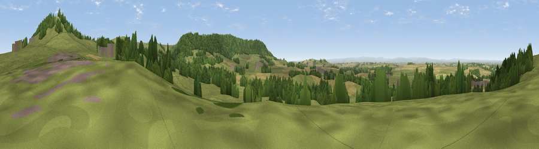

Viewpoint near Osmotherley
#15122 in England · top 43% of its area beats it · near OsmotherleyWhere it is
The exact computed spot (SE 44875 97125). Click the marker for map links.
The view, rendered

A 360° render of this exact spot computed from the terrain model, tree cover and land cover — summer colours, afternoon light, calibrated against photographs of famous viewpoints. Real trees, hedges and buildings will differ in detail.
The panorama
Grey silhouette: terrain skyline in each direction (720 bearings, Earth curvature and refraction included). Dashed green: skyline with trees (+15 m) and buildings (+8 m) as obstacles. Blue strip: how far the ground is visible on each bearing.
Where the view opens
Wedge length = distance to the farthest visible ground on that bearing (vegetation-aware). Rings at 10, 25 and 50 km.
What fills the view
62% grassland · 19% woodland · 16% cropland · 3% built-up
Angular shares of the visible panorama (visual magnitude), not map area. Landscape diversity 0.44 (0–1 Shannon).
Key numbers
More beautiful places nearby
The staircase of upgrades: each row has a higher view potential than everything closer. Driving times are estimates from straight-line distance, calibrated against real road routing — check an actual route before setting out.
| Place | Direction | Drive | Score |
|---|---|---|---|
| Viewpoint near Ingleby Cross | NNE · 2 km | ~5 min | 76.5 |
| Viewpoint near Ingleby Cross | NNE · 2 km | ~6 min | 78.8 |
| Beacon Hill | NNE · 3 km | ~7 min | 84.7 |
| Carlton Bank | NE · 9 km | ~17 min | 85.1 |
| Roseberry Topping | NE · 20 km | ~34 min | 85.8 |
| Viewpoint near Lazenby | NNE · 24 km | ~40 min | 86.4 |
| Warsett Hill | NE · 34 km | ~52 min | 86.8 |
| Viewpoint near Easington | NE · 37 km | ~56 min | 90.2 |
54.36767, -1.31082 · source: screening · position refined by local search. Computed location — check access rights before visiting.